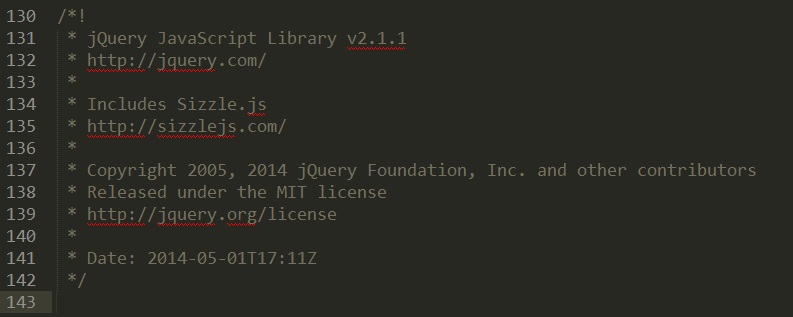
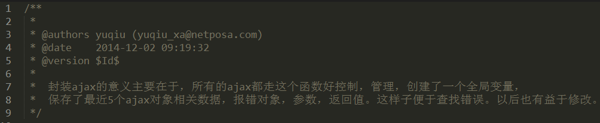
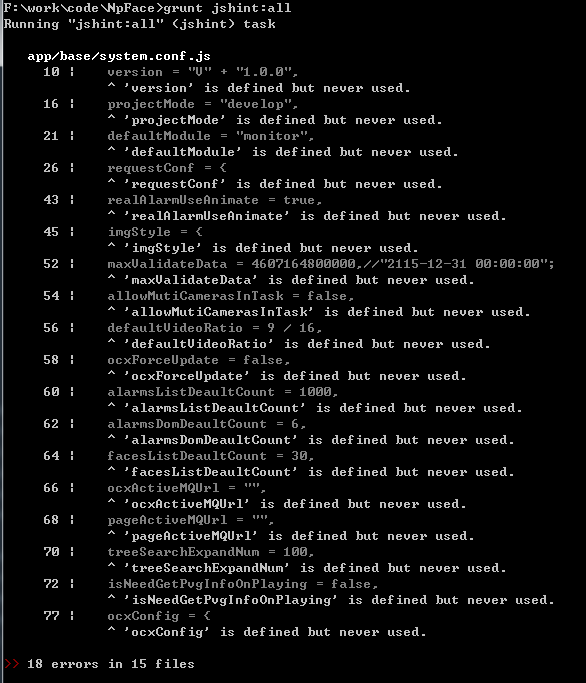

JavaScript编程规范
代码编写规范
文件编码格式
所有诸如JS，HTML，CSS等文本类型文件的编码格式必须使用UTF8方式。文件内的换行符统一使用UNIX风格或者Window风格，文件编辑过程中最好不要变更。
缩进
缩进可以使用4个空格或者TAB键，但在同一个工程项目里，必须使用一致的缩进方式。建议使用TAB键，并且将编辑器的TAB键字符宽度设为4，好处是编程时不用刻意关注排版缩进，避免分散注意力；而且大部分编辑器都能提供自动排版工具，基本都以TAB键为主。
行宽
- 原则上不允许让一行代码超过80个字符（包括TAB键），鉴于主流屏幕分辨率的提高，100字符内的行宽也是可接受范围。
- 当一条语句不能在单独一行写完时，有必要拆分它。一般在操作符后进行拆分，这样可以减少了通过插入分号伪装copy-paste错误的可能性。
- 后续拆分行应该缩进2个单位，与正常块缩进区分开来。
括号的使用以及块的定义
括号的使用配对必须对齐使用。
1.当大括号用于块结构时：左括号应当位于块起始行的最后一个字符，与前一个符号，函数名等间隔一个空格，与保留字之间保留一个空格或者不留空格；右括号应当与块起始位置对齐。例如：
//case 1:
function myFun() {
//my function body ...
}
//case 2:
var myFun = function() {
//my function body ...
};
//case 3:
if (a > 100) {
//TODO
} else {
//TODO
}
备注:此规则的应用可以借助代码格式化(或者格式化插件)实现，需要注意的是，建议大家都应该在编写代码的时候养成好的习惯，而不要过分依赖格式化插件，特别是对于修改之前别人写的代码，如果贸然格式化将会引起大范围的diff差异，慎用;
2.当括号用于非块级结构时：括号前后如为操作符，应当间隔一个空格；其他情况，特别是函数名，分号，逗号，或者其他括号时，之后应当不留空格。例如：
var a = fun1(1, 2) + 3;
var b = [1, 2, [3]];
var c = {};
备注:此规则的应用可以借助代码格式化(或者格式化插件)实现，需要注意的是， 建议大家都应该在编写代码的时候养成好的习惯，而不要过分依赖格式化插件，特别是对于修改之前别人写的代码，如果贸然格式化将会引起大范围的diff差异，慎用;
3.当括号用于比较大的数据结构时，应当按照块级结构的方式进行编写。例如：
var positions = [{
x: 1,
y: 2
}, {
x: 4,
y: 6
}];
var a = [{
a: "one",
b: 1
}, {
a: "two",
b: 1
}];
var c = [
["one", "local site", function() {/*TODO*/}],
["step2", "remote site", function() {/*TODO*/}]
];
备注:此规则的应用可以借助代码格式化(或者格式化插件)实现，需要注意的是，*建议大家都应该在编写代码的时候养成好的习惯，而不要过分依赖格式化插件，特别是对于修改之前别人写的代码，如果贸然格式化将会引起大范围的diff差异，慎用;*
注释
- 应当尽可能编写注释，留下可供阅读和分析的信息，帮助理解程序逻辑。
- 注释首要是正确，其次是清晰易懂；建议使用英文作简短说明，如有必要也可使用中文。
- 注释中请勿传递负面情绪。
以下情况建议多写注释：
- 主要模块／类／接口／公用方法的代码块前面或者文件头部；
- 关键代码块或者包含复杂逻辑时，应当说明；
- 特殊原因编写晦涩的代码时，必须编写注释说明代码意图以及执行结果；
- 跨度较大的代码，应当按照逻辑块同时空行分割，并编写简短代码注释；
- 承载主要业务逻辑的变量和函数应当有适当的注释说明其用途；
块注释主要使用在前三种情况，而后两种情况主要使用行注释。
块级注释样例：（包括概述、作者、日期、参数说明）
/**
* [cacheAjaxObject 缓存ajax对象，以便于查看和取消]
* @author yuqiu
* @date 2014-12-02T14:23:21+0800
* @param {[type]} ajaxUrl [后端接口地址]
* @param {[type]} params [参数]
* @param {[type]} type [GET or POST]
* @param {[type]} custom [ajax更多参数配置]
* @return {[type]} [返回一个ajax对象]
*/
cacheAjaxObject: function(ajaxUrl, params, type, custom) {
//TODO
}
变量声明
所有的变量应该在使用前声明，并且赋予初始值（循环变量可以不考虑）或者null，避免使用undefined；关于全局变量的声明和使用会在后续单独说明。
变量的声明顺序应当按照在当前代码块内出现的先后顺序进行声明，并且按照承载的业务逻辑使用空行进行分割；
原则上每行声明一个变量并且给予注释，但对于相关度较高的变量可以定义在一个var语句中，例如：
var width=80, height=60; //头像区域大小
var groupController = null, //组控制器，用户回调刷新
mapCircleView = null, //地图部分防控圈对象
controller = null, //控制器对象
compiler = null, //保存模板对象
templateUrl = "inc/connection/left/defence-circle-new.html", //模板路径
eventHandler = {}; //事件处理程序
方法声明
内部方法的定义应当以命名函数为主，并且在被调用的代码处就近定义，一般情况下建议置于变量声明之后，并按照在后续代码中出现的调用顺序排列。命名函数的两种写法（case1是函数声明，case2是函数表达式）：
//case 1: function myFun() { //my function body ... } //case 2: var myFun = function() { //my function body ... };
对外接口则主要考虑使用对匿名函数的引用，匿名函数也多用于函数回调。
//对外接口 return function() { }; //回调函数 myFun(param1, param2, function() { //TODO });
命名
命名主要由应该由26个大小写字母(A .. Z, a .. z)，10个数字(0 .. 9)和_(下划线)组成。除框架用的全局变量或者方法，不要使用$符号。详细规则如下：
- 常规方法名和变量名请使用首字母小写的Camel命名法，例如：isDate,fPressed，checkIfLocalStorage等等；
- 类，模块，名字空间等结构性函数或者全局变量等请使用首字母答谢的Camel命名法，例如：PopWindow，EditDialog，UserModel，DebugLevel等等; 若是常量，采用单词大写和下划线拼接的方式，如ACTION_URL等；
- 类，模块，接口，命名空间等结构性函数或者变量内的私有性质的函数或者变量，请在常规命名前添加下划线；请注意：这里只提供阅读上的方便，不保证其实际私有性实现；
- 全局函数和方法的快捷方式，可以在常规命名前添加$符号；不推荐经常使用$符号作为命名的一部分（jQuery对象的命名建议以$符开始，方便阅读），尤其禁止使用单个$符号命名变量或方法；命名中也不允许出现多个$符号；
- 避免使用保留字或者有可能成为保留字的命名成为属性，方法，或者变量的名字；
样例如下：
//常规命名
var templateUrl = "";
//类、模块、命名空间命名
var PopWindow = (function() {
//TODO
}());
//jQuery的dom对象命名
var $cameraList = jQuery("li.camera");
//私有性质（模块局部）的变量及函数命名
var _curController = null;
function _myPrivateFun() {
//TODO
}
属性相关
属性主要分为三类：JS对象的属性，JSON对象的属性以及DOM对象的自定义属性；
JS对象的属性命名应当遵从常规变量命名规范；
//对象定义；（对象定义还可以这么写：var myObj = {}; ） var myObj = new Object(); //对象属性命名 myObj.myAttribute = "";JSON对象属性命名应当遵从常规变量命名规范，并且在书写时应当以双引号限制，使用时以obj[“abc”]的方式引用；
//json对象 var myJsonObj = { "attrOne": "first", //第1个属性 "attrTwo": "second", //第2个属性 "attrThree": "third" //第3个属性 };DOM对象的自定义属性应当以“data-”前缀进行限制，启后的部分也应当遵从常规命名规范（尽量保持小写格式）；
<div class="row clearfix"> <label>框选资源：</label> <span class="map-draw" data-event="click" data-handler="MapSelect"></span> </div>
一些JS语法的写法
大部分JS语法不需要作特定规范，这里只规定一些需要注意或者回避的事项（加粗部分需要重点关注）：
- 没有特殊理由，不应当使用标签语句；
- 没有特殊理由，不应当使用with语句；
- 没有特殊理由，不应当使用eval语句；
- 非必要情况下，避免使用++，- -等语法；、
- 非必要情况下，请勿使用Function方法构造函数；
- 非必要情况下，请勿传递字符串给setTimeout／setInterval方法；
- 非必要情况下，字符串应当使用双引号进行限制，单引号的使用应当局限于特殊场景；
- continue语句尽量少用，应当避免在较大的代码块中使用，如实在需要使用，应当和块头距离在10行以内；
关于Switch语句，避免过度缩进；并且每个case都应当有自己的break/return/throw等结束语句，不建议共享结束语句；如需共享，应当使用空行和缩进，辅之以注释进行明显区分，例如：
switch (type) { //business one case "case": case "case2": //TODO break; //business two case "case3": case "case4": //TODO break; //business three case "case5": //TODO break; default: //TODO };如无特殊理由，块末的分号禁止忽略不写；
- 逗号的写法应当严格按照语法，不可以多写或者少写；
- 空格的使用一般情况下不做严格要求。除排版需要外，应当避免连续出现两个或更多空格；操作符，赋值号，逗号等前后应当各保留一个空格，保留字、函数名、括号后建议不保留空格；
- 使用{}替代new Object()。使用[]替代new Array()；
- 非方法级代码块不应当定义局部变量；
- 条件语句中不允许出现赋值代码；
- 尽量使用===和!==，少使用==和!=；
三目操作符应当适当使用，不要书写过长的三目操作符语句；问号和冒号间的的稍长的代码应当使用小括号包含起来并空出一个空格进行间隔，例如:
//三目运算符 var curWidth = width > 400 ? (maxWidth - halfWidth + marginLeft) : (halfWidth - marginRight)条件语句如果内容过长时，应当考虑通过变量赋值的方式减少长度；如实在必要，可以考虑将布尔运算符联通后续的条件进行换行续写；例如:
//条件内容比较长时，换行 if(((maxWidth - halfWidth + marginLeft) > 900 && maxHeight > 400) || ((maxWidth - halfWidth + marginLeft) < 300 && maxHeight < 200)) { //TODO }
代码结构规范
文件内代码结构
JS文件应当分为两部分书写：
- 第一部分为文件主体注释，以块级注释方式描述文件内容，对接接口等内容。如非基础性或者常用库代码，可以省略。例如：
Case1:

Case2:

- 第二部分为代码主体，应当以如下方式进行封装：
Case1:函数表达式
//无模块加载
(function() {
//TODO, Module Body
}());
//依赖注入
(function(Module1,Module2, Module3) {
//TODO, Module Body
}({}, module1, module2,...));
Case2:requireJS
define(["jquery", "underscore"], function($, _) {
//TODO, Module Body
});
模块／接口定义：
- IX框架
项目中跨文件进行调用的接口，模块，方法等应当使用命名空间进行限制。如使用IX框架，应当如下书写：
IX.ns("IXW.Lib");
IXW.Lib.GridModel = function(id, cfg) {
//TODO
};
requireJS
define(["jquery", "underscore"], function($, _) { //局部变量（具有私有性质） var _myPrivateValue = ""; //局部函数及接口（具有私有性质） function _myPrivateFun() { //TODO } //对外接口 return { //接口1 interface1: function() { }, //接口2 interface2: function() { }, //接口3（引用内部函数，对外暴漏） interface3: _myPrivateFun }; });其他情况应如下书写（或者使用各自框架提供的命名空间工具）：
window.ModuleA = {}; ModuleA.GridModel = function(id, cfg) { //TODO };
使用外部模块／接口：
项目中跨文件进行调用接口，模块，方法等，可以使用直接使用用完整命名空间的方式调用，也可以对命名空间定义快捷引用，然后使用快捷引用的方式使用；
样例如下：
(function(Module1,Module2, Module3) {
//全局的外部模块调用： case2
var moduleX = new GlobalModule1();
//全局的外部模块调用： case3
var moduleY = new GlobalModule2.createObject();
}({}, module1, module2,...));
//requireJS外部模块引入
define(["jquery", "underscore"], function($, _) {
//TODO: use $/_ do something
});
函数或代码块约束：
- 常规函数或代码块的长度应当控制在40行以内，代码结构不应当超过5层（最好在三层左右）缩进；如确实存在较大的控件，或控制中枢类的函数，其长度也应当控制在200行以内。
- 函数或代码块的长度和缩进控制，可以通过代码块分离，函数重构的方式进行处理。
- JS文件的长度，如非基础性或者框架性文件，不应当超出500（加上注释）行，如因功能复杂导致代码过长，可以按照功能和结构拆分成多个子文件，通过接口方式调用；
文件组织规范
文件的组织应当以模块为单位，分散于各级子目录中。
各级目录下文件控制在10（模块化拆分后最好控制在20个以内）个以内为宜，文件数如果太多会对代码阅读造成一定障碍，如果确实太多，一方面可以文件合并，另一方面可以拆分目录。
代码文件的目录层级不宜过多，建议控制在5级以内
一般如下：
src／项目专用目录／子系统模块级目录／组件页面级目录／类接口级目录
JS代码静态审查
本文以grunt-contrib-jshint插件为例：
Grunt安装
Grunt安装之前需要在系统中安装NodeJs环境，然后将grunt配置中的文件拷贝到与工程根目录平行的目录下；
具体安装过程参考：http://www.gruntjs.net/getting-started
grunt-contrib-jshint安装及配置
在nodejs及grunt环境安装完成的情况下：
- 打开系统命令行窗口；
- 进入到与工程根目录平行的目录下；
- 执行
npm install grunt-contrib-jshint --save-dev命令进行插件安装； - 该插件的配置文件见jshint.config.json文件；
在gruntfile.js配置任务：
module.exports = function(grunt) { // Project configuration. grunt.initConfig({ pkg: grunt.file.readJSON("package.json"), jshint: grunt.file.readJSON("jshint,config.json") }); grunt.loadNpmTasks("grunt-contrib-jshint"); //default task(s) grunt.registerTask("default", ["jshint:history"]); //静态审查任务 grunt.registerTask("myTask", ["jshint:history"]); };
执行静态审查
- 打开系统命令行窗口；
- 进入到与工程根目录平行的目录下；
- 执行grunt命令：
grunt myTask 审查结果如下：
对照着审查结果进行修改。